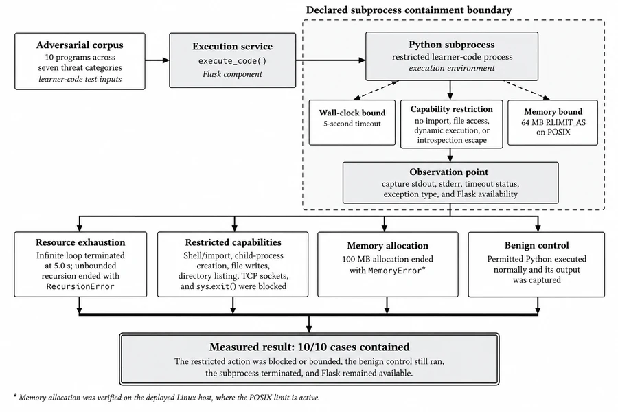
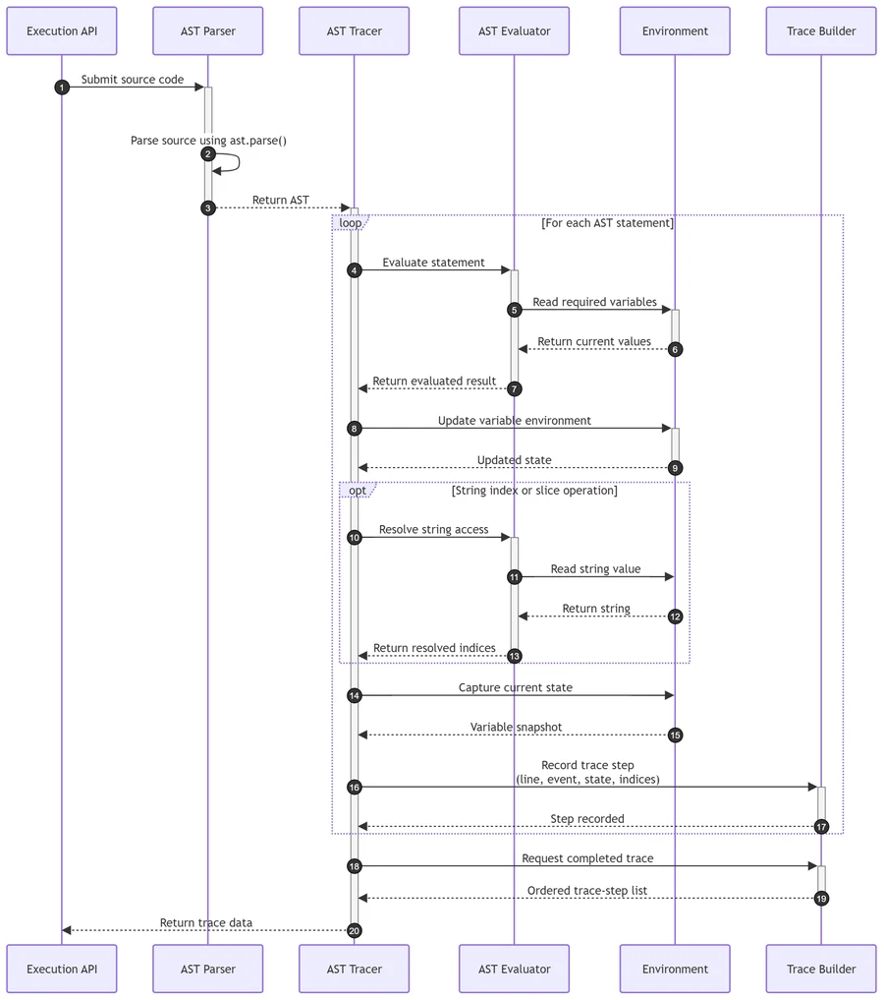
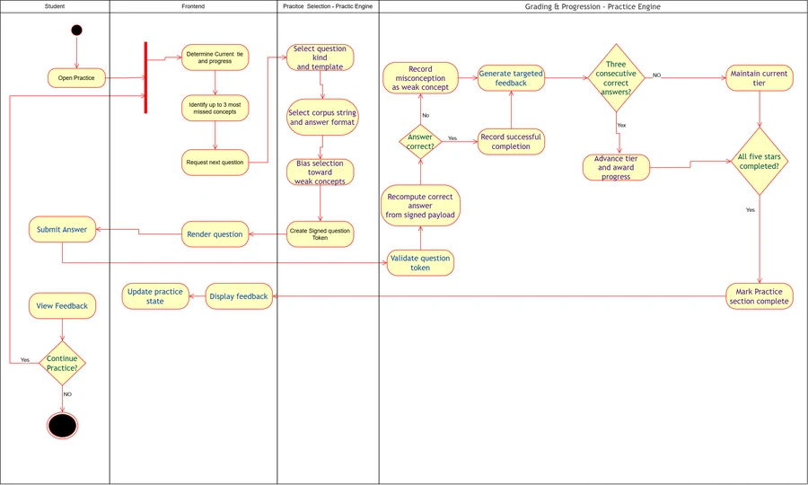
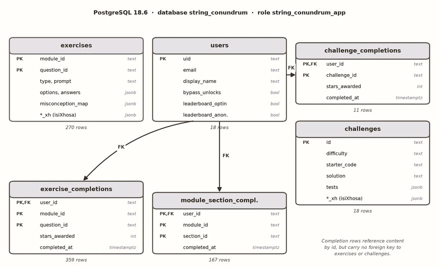
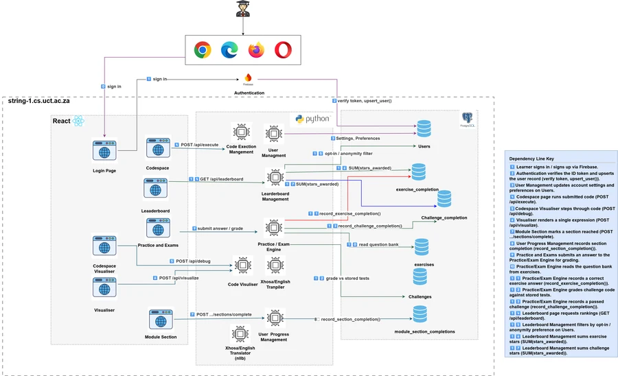
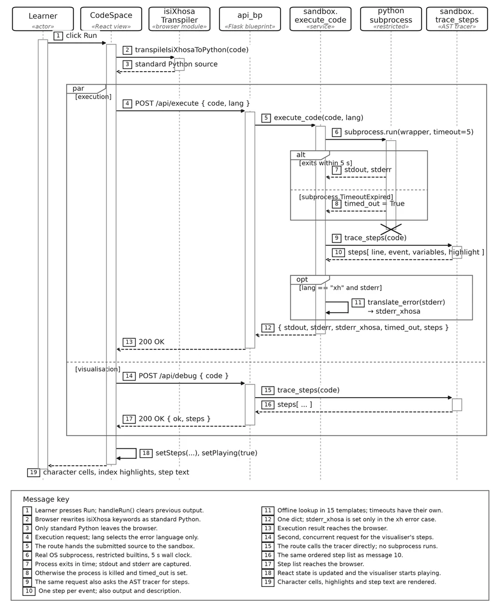

Literature review
Reviews notional machines, threshold concepts, novice errors and existing program visualisation tools.
5Individual contribution · back end
Luvuyo Matomela developed the back end of String Conundrum: a sandbox for running learners' Python code, an AST-based tracer that records which characters each step uses, adaptive practice for all eight modules, and the database storage for progress and leaderboards.
0Final paper
Strings are fundamental to introductory programming, yet novice Python programmers often struggle with concepts such as indexing, slicing, immutability, comparison, and iteration because of incomplete or inaccurate mental models of program behaviour. String Conundrum is a web-based educational system designed to address these difficulties through structured lessons, string-focused visualisation, executable examples, adaptive practice, and misconception-targeted feedback.
This paper presents the author's backend contribution: sandboxed Python execution, an AST-based statement-level tracer that supplies the state and character indices required for visualisation, procedurally generated adaptive practice across eight string modules, persistent learner progress, and optional English–isiXhosa keyword and runtime-error support that leaves the underlying Python execution model unchanged.
The backend was evaluated against five measurable requirements (R1–R5) and through a three-cycle human evaluation with 35 students, supported by a cross-team peer review and a supervisor acceptance walkthrough. All 274 automated tests passed, a live PostgreSQL experiment verified the production persistence path, the sandbox contained all ten adversarial cases in its declared threat set, a 257-program tracer corpus matched observed Python behaviour throughout, round-trip transpilation preserved text and behaviour for all 18 challenge solutions, and the live endpoint stayed within its two-second target through 100 concurrent requests. Pooled System Usability Scale was 80.8/100 (n = 33) and did not degrade in the first-year cycle. An applied knowledge check found that 11 of 35 participants could not say what in-place character assignment does, 10 of them expecting no error at all: locally gathered evidence that the targeted misconception is real and persistent. Human and technical evidence converged on assessment robustness as the principal weakness, and a 1,600-question sweep run in response located a concrete grading-presentation defect. These results establish technical correctness, requirement satisfaction, and usability within the scope evaluated. They do not establish improved learning outcomes, for which a controlled pre-/post-test study remains necessary.
1Requirements
Six functional and six non-functional requirements were refined during development. Three changes affected the design: PostgreSQL replaced the planned Firestore database; adversarial testing showed that a subprocess with a timeout was not enough, so the sandbox was designed around an explicit threat model; and adaptive practice was extended from a slicing-only prototype to one engine shared by all eight modules. Requirements R1 to R5 are the measurable requirements, each tested by an experiment.
| ID | Requirement | Outcome |
|---|---|---|
| R1 | Learner code executes independently of Flask and terminates within a fixed limit. | Met All ten adversarial cases contained. |
| R2 | Traces and resolved string indices agree with observed Python behaviour for supported constructs. | Met 257-program corpus consistent with CPython. |
| R3 | Supported programs keep their executable behaviour after English–isiXhosa round-trip transpilation. | Met 18 of 18 solutions identical and still passing. |
| R4 | Execution stays below the two-second response target at expected deployment concurrency. | Met p95 1.12 s at 100 concurrent requests. |
| R5 | Generated practice has uniquely recoverable answers and accurately represents learner selections during grading and feedback. | Met after one presentation defect was found and fixed. |
2Design
The main back-end design decisions and their trade-offs are listed below. Three of them limit what the evaluation can claim.
| Decision | Chosen | Alternatives considered | Trade-off accepted |
|---|---|---|---|
| Execution tracing | AST tracer | sys.settrace; debugger hooks | A defined Python subset rather than the whole language, in exchange for exposing string indices and state explicitly. |
| Persistence | PostgreSQL | Firestore; a JSON file only | More schema work than a document store, in exchange for a direct fit to progress and leaderboard aggregation. |
| Practice architecture | Shared core plus module generators | One engine per module; a static bank only | Needs a common abstraction, in exchange for avoiding eight divergent implementations. |
| Bilingual support | Client-side keyword transpilation | Backend translation; a separate isiXhosa language | Localisation limited to the supported vocabulary, in exchange for one execution language and no second correctness surface. |
| Isolation boundary | Restricted subprocess | In-process execution; a container sandbox | Weaker than a container, in exchange for being deliverable and stronger than in-process execution. |
Why an AST tracer
A standard debugger provides line numbers and variable values, but the visualisation also needs the character positions used by each index or slice. Interpreting the AST directly records these positions in the trace. Because the same mechanism produces both the program state and the highlighted indices, they are always consistent.
3Implementation
Protected routes verify a Firebase ID token and upsert the learner into PostgreSQL, so progress survives across sessions. Guest and display-name-only sign-in options were added to make sign-up easier during usability testing, while still giving each participant a stable identity.
Learner code, for free exploration and challenge grading alike, runs in a separate subprocess with three restrictions: a five-second wall-clock timeout; restricted built-ins that remove imports, file access, dynamic execution and the common introspection routes back to them; and, on POSIX hosts, a 64 MB address-space cap. Because the code runs in a separate process, an infinite loop or crash does not block Flask.
This is weaker than container isolation, so it was evaluated against seven threat categories fixed in advance: CPU exhaustion, memory exhaustion, filesystem access, outbound networking, process creation or termination, import and introspection escape routes, and benign code that must still run.

The tracer parses a program once into an abstract syntax tree, then walks the supported statements while maintaining an explicit environment. Each step it emits is a JSON record of the source line, event type, current variables, highlighted string indices and a short learner-facing description. A 200-step ceiling bounds the trace, and negative and out-of-range slice bounds are normalised exactly as Python does.
| Statements | Assign, AugAssign, Expr (including print and method calls), For, While, If |
|---|---|
| Expressions | Name, Constant, BinOp, BoolOp, UnaryOp, Compare, Call, Attribute, Subscript |
| String handling | Index and slice highlighting, negative-index normalisation, bounded slice ranges, condition substitution |
| Out of scope | Imports, function and class definitions, exception handling, context managers, comprehensions, generators |

trace_steps call: parse once, evaluate each statement against the environment, resolve string indices, record the step (Matomela 2026, Figure S18.6).Practice is available for all eight modules. Instead of using a fixed question bank, each module generates questions from concept-specific templates combined with different strings, question types, answer formats and difficulty levels. A shared core handles tier progression, signed tokens, adaptive selection and answer normalisation. Each module provides its own templates and grading rules through a common generate() and grade() interface.
Multiple-choice distractors are linked to named misconceptions where possible, so a wrong answer indicates a likely misunderstanding. The signed token contains enough information to rebuild the question when grading, so the server recomputes the expected answer without storing sessions and rejects altered tokens.
| Layer | Responsibility |
|---|---|
practice_engine_core.py | Token signing and verification, tier handling, weak-concept weighting, shared answer normalisation and validation |
*_engine.py, one per module | The public generate() and grade() interface and the module's own question kinds and grading logic |
*_templates.py, one per module | The concept-specific template catalogue, tier tags and scenario builders |
routes.py | One uniform API surface for all modules, dispatching to each engine |

Bilingual support uses two separate mechanisms. The keyword transpiler applies an ordered mapping in the browser before any code reaches the server, so the sandbox and tracer only ever receive standard Python; multi-word keywords are substituted before their parts, and nothing changes inside comments or string literals. Separately, fifteen pre-translated templates explain the principal exception categories in isiXhosa, with details such as the line number filled in at request time. An unrecognised error is shown in English, as the requirements specify.
PostgreSQL stores learner identities, exercises, challenges, completion records and module progress. Three properties of the design are important:
A JSON-file fallback isolates the logic from database availability in tests; the production path was checked separately on the live database.

| Method and path | Sign-in | Purpose |
|---|---|---|
POST /api/execute | No | Run submitted code in the sandbox; return stdout, stderr and a full trace |
POST /api/debug | No | Return the tracer's step list without running the code |
POST /api/visualize | No | Render one string expression as indexed, highlighted character cells |
GET /api/challenges | No | List the coding challenges, with solutions and tests stripped |
GET /api/challenges/{id}/solution | No | Return one challenge's reference solution on request |
POST /api/challenges/run | Yes | Grade a submission against the stored tests; award stars on a full pass |
GET /api/progress/{uid} | Yes | The learner's own section progress, unlock state and leaderboard preferences |
POST /api/modules/{id}/sections/{id}/complete | Yes | Mark a module section as reached |
PATCH /api/settings | Yes | Update the unlock bypass and leaderboard opt-in and anonymity |
GET /api/leaderboard | No | The top-scoring learners who opted in |
POST /api/auth/guest | No | Issue a token for a fresh anonymous session |
POST /api/auth/username | No | Issue a token for a stable, display-name-only account |
GET /api/exercises/{module}/engine/next | No | Generate one practice question for a module and tier, biased toward recent misconceptions |
POST /api/exercises/{module}/engine/answer | Yes | Verify the signed token, grade the answer and award stars |


4Results
| File | Tests | Passed |
|---|---|---|
| test_slicing_engine.py | 58 | 58 |
| test_intro_engine.py | 31 | 31 |
| test_indexing_engine.py | 31 | 31 |
| test_formatting_engine.py | 29 | 29 |
| test_methods_engine.py | 26 | 26 |
| test_comparison_engine.py | 25 | 25 |
| test_looping_engine.py | 24 | 24 |
| test_immutability_engine.py | 21 | 21 |
| test_api.py | 12 | 12 |
| test_slicing_engine_api.py | 9 | 9 |
| test_error_translation.py | 8 | 8 |
| Total | 274 | 274 |
word[0] = "J" do?One square per participant, all three cycles (n = 35), for word = "Python".The silent-mutation answer appeared in every cohort (2 of 11, 2 of 11 and 3 of 13), including the senior cohorts.
| Model | Participants |
|---|---|
| Assignment rejected – Python raises TypeError (correct) | 24 |
| Silent mutation – “word becomes "Jython"” | 7 |
| Silent no-op – “Nothing changes, no error” | 3 |
| Wrong error type – Expected an IndexError | 1 |
POST /api/execute over the real network, 5 to 1,000 concurrent requests; both axes logarithmic.Concurrent requests (log scale)
Throughput stayed between 85 and 97 requests per second at every level, which is consistent with a fixed pool of four Gunicorn workers.
| Concurrency | Requests | Failed | p50 | p95 | Throughput |
|---|---|---|---|---|---|
| 5 | 100 | 0.00% | 54.5 ms | 75.3 ms | 85.28 req/s |
| 10 | 100 | 0.00% | 113.4 ms | 148.0 ms | 86.39 req/s |
| 20 | 100 | 0.00% | 220.8 ms | 242.6 ms | 86.58 req/s |
| 50 | 100 | 0.00% | 445.0 ms | 557.8 ms | 88.15 req/s |
| 100 | 200 | 0.00% | 1,040.8 ms | 1,119.5 ms | 90.27 req/s |
| 300 | 600 | 0.00% | 3,265.8 ms | 3,649.7 ms | 85.26 req/s |
| 500 | 1,000 | 0.00% | 4,859.1 ms | 5,228.9 ms | 96.76 req/s |
| 800 | 1,600 | 48.12% | 4,086.4 ms | 7,553.3 ms | 96.75 req/s |
| 1,000 | 2,000 | 57.90% | 4,635.1 ms | 8,267.2 ms | 89.27 req/s |
Grading display defect
Cycle 2's free-text responses, all three peer developers and three of the thirteen Cycle 3 participants questioned the reliability of assessment. This led to the 1,600-question R5 check, which found a defect in how select-all questions were displayed after grading: a correct option the learner had not chosen looked the same as one they had chosen. The grading itself was correct. The fix adds a fourth post-grading state so that only the options a learner selected appear selected.
Usability was “Good” in every cycle (pooled SUS 80.8, n = 33). The full human evaluation, shared by both papers, is on the results page.
5Conclusions
All five measurable requirements were met within their declared scope, and data storage was confirmed on the production database. The main contribution shows that string-specific teaching data, such as the character indices used at each step, can be produced and verified through execution tracing instead of being reconstructed in the interface. It also shows that one shared practice core can serve eight concept areas and still be tested independently.
The evidence establishes requirement satisfaction, technical correctness within the scope tested and usability with the intended first-year audience. It does not establish improved learning outcomes. The most important future work is a controlled pre- and post-test study. The evaluation also identified two further improvements: showing difficulty levels so that adaptive practice feels relevant, and extending keyword transpilation into a fully bilingual interface.
6Literature review
The review asked two questions: what the research literature reveals about novice difficulties with strings, and what teaching tools have been built to address them. It drew on four areas: the string properties that cause confusion (immutability, zero-based indexing with exclusive end bounds, and comparison semantics that differ across languages); notional machines and threshold concepts as explanations for why misconceptions form and persist; empirical studies of novice errors; and tools including program visualisers, intelligent tutoring systems and game-based approaches.
It found that general programming misconceptions are well documented but string-specific difficulties remain largely unstudied, and that existing visualisers show string behaviour but do not explain it. These gaps in research and in available tools motivated the development of a tutor focused on strings.
Reviews notional machines, threshold concepts, novice errors and existing program visualisation tools.
7Citation
@techreport{matomela2026stringconundrum,
author = {Luvuyo Matomela},
title = {String Conundrum: An Interactive System for
Teaching and Visualising Python String Concepts},
type = {Honours project paper},
institution = {Department of Computer Science,
University of Cape Town},
address = {Cape Town, South Africa},
year = {2026}
}